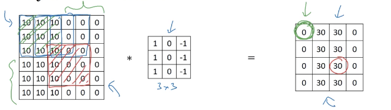
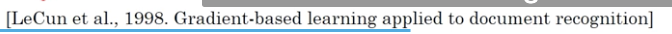
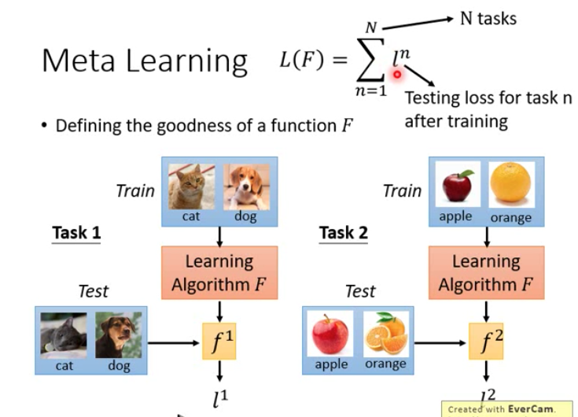

DeepLearningAndrewNg
The Deep Learning Specialization is a foundational program that will help you understand the capabilities, challenges, and consequences of deep learning and prepare you to participate in the development of leading-edge AI technology.
1.4 正则化
1.5 卷积步长
输出的图片的size
[[DeepLearningAndrewNg-Figure-1.png|00]] [[DeepLearningAndrewNg-Figure-2.png]]
如果不是整数 ，向下取整
- [[DeepLearningAndrewNg-Figure-4.png]]蓝色框在外面的时候就不计算卷积了
1.6 三纬卷积
按照惯例，这两个nc要相等。
1.7 单层卷积网络
从a[0]->a[1]
[[DeepLearningAndrewNg-Figure-6.png]]
神经网络拟合
参数数量计算
[[DeepLearningAndrewNg-Figure-7.png]]
- 需要注意，这里每个卷积核会带来28个参数（27个卷积核内的参数，1个bias）
- 不管图片输入多大，参数始终都是280个。（你已经知道如何提取10个特征，可以应用到更大的图片中，而参数数量却不变）
各种标记的总结
[[DeepLearningAndrewNg-Figure-8.png]]
[[DeepLearningAndrewNg-Figure-9.png]]
- 上标用来表示第几层
question
[[DeepLearningAndrewNg-Figure-10.png]]
这里bias的维数为什么是这样
1.8 简单卷积网络示例
[[DeepLearningAndrewNg-Figure-11.png]]
- 其中最后一层是平滑输出为一个向量，logistics或者是softmax，取决于是想识别一个物体还是不同类别的物体。
- 特征图的高度和宽度在减小，通道数在增加
- 关于这些所有参数如何确定，后面会讲
三种种类的层
[[DeepLearningAndrewNg-Figure-12.png]]
- 虽然只使用Conv层也可能构建出很好的神经网络，但是大部分神经网络架构师依然会添加pool和FC
1.9 pool
pool作用
- 缩减模型的大小
- 提高计算速度
- 提高所提取特征的鲁棒性
pooling举例&为什么要pooling
maxpooling的直观理解
发现这个特征，那就将他最大化；要是没发现，那就认为没有
Average pooling有时候会用
question
- 测试一下maxpolling是不是把图像模糊了
- [[DeepLearningAndrewNg-Figure-13.png]] 选出最大的数，这个在源码里是怎么执行的？在硬件上有没有加速的可能？
1.10 卷积神经网络举例（数字识别）
1.11 为什么使用卷积
全连接让参数太多了
[[DeepLearningAndrewNg-Figure-14.png]]
权值共享
为什么卷积让参数变少了，因为权值共享。
假设一个卷积核可以检测竖直边缘，那么它就适用于任何地方。
稀疏连接

左边红色的框，决定了右边红色圈里的数字30->左边红色的框只与右边圈里的30连接
⬆️全连接和权值共享让参数变少
总结，为什么使用卷积
- 通过权值共享、稀疏连接，让参数变少（比全连接少）
- 当图片里的物体发生小的移动的时候，也可以让结果在一定范围内不变
2.1 Mini-Batch
2.2 经典网络
LeNet-5
针对阅读这篇经典论文的同学

- 过去人们经常用Sigmoid函数和Tanh函数，但现在人们你经常用Relu函数
- 通过某种复杂的计算方法，让信道数都保持一致，为了减少运算量。但现在计算都比较快速了，所以不需要这样了。
- 经典的LeNet-5网络在池化后进行了非线性函数处理，Sigmoid。至于为什么，之后会讲。
- 建议精读第二段，略读第三段
- 第三段介绍了graph transformer network，但如今没有广泛使用。
AlexNet
- 原文是224*224，但实际上227*227会更好
表现更好的原因：
- LeNet-5参数只有60thousand，ALexNet有60million个参数
- 使用了ReLu激活函数
针对阅读这篇经典论文的同学
- 当时GPU计算较慢，所以使用了复杂的方法去在两个GPU上并行
- LRN（local response normalization）层，使用的并不广泛。大致思路是： 选取一个位置，穿过整个信道，将所有值归一化。理由是也许并不需要这么多的激活神经元，但后来研究者们发现不怎么起作用。
VGG-16
这个16是指
- 这是个1.38亿（138million）参数的巨型网络
- 但是吸引人的是，结构并不复杂，结构很规整。都是几个卷积跟着几个池化（可以压缩图像大小）。
- 缺点是需要训练的特征数量非常大。
- 但是卷积核的数量变化是有规律的，翻倍（绿色笔记圈出来了⬇️）。
[[DeepLearningAndrewNg-Figure-21.png]]
- 作者当时可能认为512已经够大了，所以并没有进行继续翻倍
- 这种让卷积核翻倍的操作是这种网络结构的思想。
 这篇文章介绍了VGG-19，但是和16的效果差不多。
这篇文章介绍了VGG-19，但是和16的效果差不多。- 文中揭示了，随着网络的增加，信道数的翻倍和图片的缩小之间是有规律的，这一点比较吸引人。
2.3 残差网络
因为梯度消失和梯度爆炸的原因，所以训练很深的网络是很难的。但是这节课要学的skip connection（或者说是short cut），可以从某一网络层直接获得激活值，跳过很多层网络，这样可以构建像ResNet一样的深层网络。
Residual block 残差块
信息流的主路线
[[DeepLearningAndrewNg-Figure-23.png]]
⬆️将信息直接送到了l+2层，且在非线性ReLu激活函数之前
⬆️plain network，通过每两层之间加上连接，构成一个一个的残差块，从而形成残差网络。
[[DeepLearningAndrewNg-Figure-25.png]]
⬆️残差块让“越深越精确”成为了现实。
2.4 残差网络为什么有效
没太听懂。。。
问题
- 什么是hold-out交叉验证
2.5 1x1的卷积有什么用
提出文章
- 虽然其中关于网络架构的部分没有得到广泛的应用，但是这种network in network的理念却很有影响力，很多其他网络都受他影响，包括下节课要讲的inception网络
在一维上的1x1卷积确实没什么用，但是如果是多个channel的话，就会有用。
[[DeepLearningAndrewNg-Figure-27.png]]
1x1卷积实际上在做的是
- 遍历一个位置的32个信道（一个位置的切片），和卷积核相乘，得到一个实数，然后ReLu。
- 可以这样理解⬇️
- 相当于是一种全连接，一个切片中的32个元素，和，输出层中一个切片中的number of filters个元素
[[DeepLearningAndrewNg-Figure-28.jpg]]
1x1卷积的一个例子
- 通道太多，通过使用多个1x1卷积核来让通道数减少。 [[DeepLearningAndrewNg-Figure-29.png]]
问题
- 使用1x1卷积核压缩通道数，这样真的可以吗？这并没有怎么保留原来的信息，而是直接一股脑加起来了。
- 能不能选择更有用的信息留下来
- 剪枝是剪掉了卷积核，还是剪掉了某一层的输出？
2.6 谷歌inception网络简介
inceptino网络可以替你决定用什么规格的卷积核、加不加pooling层
提出文章；
核心思路
[[DeepLearningAndrewNg-Figure-31.png]]
把不同规格的卷积核、pooling，输出的东西都堆叠在一起，然后让网络自己去学习到底要不要进行这些操作。
计算代价——直接计算
计算代价——先使用1*1conv对网络进行压缩
[[DeepLearningAndrewNg-Figure-32.png]]
先压缩网络，然后再扩大。乘法运算次数降到了120million。
因为加法次数和乘法次数基本相同，所以这里只计算了乘法次数。
总结
如果你不想自己决定选用什么规格的卷积核，那就用inception。
涉及到计算成本的时候，可以用1x1卷积来制造瓶颈层（先压缩网络，然后再扩大），来降低计算成本。但是这种压缩会不会让神经网络的性能下降呢？事实证明，合理的使用的话，可以让效果兼得。
2.11 向量化
用矩阵乘法代替二维循环
[[DeepLearningAndrewNg-Figure-33.png]]
[[DeepLearningAndrewNg-Figure-34.png]]
2.13 向量化Logistic回归
多样本输入（纵向叠加x）、单Logistic（w一维）
这里的x(1)是表示一个样本，而向量化后就是把每个样本的特征向量（列向量）vertically叠起来，while 参数wT还是一行，此时输出的a也会vertically叠起来。这样 就相当于一次矩阵运算完成了多个样本的forward，可以一次在很多数据集上进行梯度下降。
[[DeepLearningAndrewNg-Figure-35.png]]
attention
注意力：在输出翻译句子的第一个词的时候，要看source句的哪些部分（不是第一个单词，但也肯定不是句尾，不能看得太远了），要分别对source句中的每个部分有多少注意力。
3.2 神经网络表示和输出（单样本输入、多Logistic）
hiden layer：因为在训练的过程中，这些节点的值并不知道。
一般在说几层神经网络的时候不算输入层（0层），但是算最后的classfier层（即使是1个节点）。
这里的x1，x2，x3共同组成了一个x的特征向量输入（x1，x2，x3分别代表一个数）。
w是(4,3)，4代表这层有几个神经元节点，3代表前一层的输入是几维的。
[[DeepLearningAndrewNg-Figure-36.png]]
单样本输入（x一列）、多Logistic（w多维）
[[DeepLearningAndrewNg-Figure-37.png]]
这里把行向量wT纵向堆叠，而输入就是一个样本的列向量，所以乘出来的z也是纵向排列。然后对Z用一下sigmod，就生成了纵向排列的a[1]。
[[DeepLearningAndrewNg-Figure-38.png]]
维数整理
[[DeepLearningAndrewNg-Figure-39.png]]
3.4 多个样本的向量化（多样本输入、多Logistic）
普通训练方法：一个一个计算y_predict，如果要计算所有m个样本的predict，那么需要做一个for i=1 to m的循环。现用向量化来一次计算所有样本的predict。
[[DeepLearningAndrewNg-Figure-40.png]]
多样本输入、多Logistic
多样本：把列向量横着排起来。多Logistic（神经网络）：把wT行向量竖着排起来。
关注紫色部分：
- 横向扫，会扫过不同的训练样本（training examples）。
- 纵向扫，会扫过隐藏层不同节点的值a（hiden units）。
[[DeepLearningAndrewNg-Figure-41.png]]
多样本向量化输入的详细解释⬇️。
[[DeepLearningAndrewNg-Figure-42.png]]
3.6 激活函数
最普通的是sigmod，但tanh函数（实际上是向下平移后的sigmod）大部分时候表现更好。
在二分类的最后一个单节点层的时候，可以用sigmod输出0-1的值。
但sigmod和tanh都在两端有梯度消失的问题，所以Relu（修正线性单元）用的更多。Relu在负数时导数为负，尽管实践中没什么问题，但也有一种改进版本的Relu called Leaky Relu（带泄露的Relu），但用的不如Relu多。
Relu和Leaky Relu会让学习速度更快，因为在大部分Z空间，导数比较大。
[[DeepLearningAndrewNg-Figure-43.png]]
四种常用的激活函数
[[DeepLearningAndrewNg-Figure-44.png]]
3.7 为什么要用非线性的激活函数
如果采用线性的激活函数，那么最后输出的东西就是输入的线性组合，那么神经网络hiden layer层数再多也不会增加black box的复杂度，还不如都去掉。
[[DeepLearningAndrewNg-Figure-45.png]]
Relu为什么不是线性的，怎么理解？
[[DeepLearningAndrewNg-Figure-46.png]]
[[DeepLearningAndrewNg-Figure-47.png]]
5.2 序列模型数学符号
[[DeepLearningAndrewNg-Figure-48.png]]
one-hot词向量表示法
[[DeepLearningAndrewNg-Figure-49.png]]
5.3 循环神经网络
为什么不用standard network
input和output可能会有不同的长度。
不能共享在text不同位置学习到的feature。
[[DeepLearningAndrewNg-Figure-50.png]]
这样RNN有一个缺点：这样的结构只能利用到当前time step之前的信息，没法利用到之后的信息。比如下面的例子中，只看到Teddy和它之前的单词，是无法准确判断语义的。之后会提到BRNN（双向循环神经网络）
[[DeepLearningAndrewNg-Figure-51.png]]
RNN forward过程的数学运算
Wax表示后面要乘一个x类型的变量，并且计算得出的是一个a类型的变量。
g1和g2可以是不同的激活函数。在这里由于是name entity问题，是一个二分类问题，所以g2可以用sigmoid函数。
[[DeepLearningAndrewNg-Figure-52.png]]
简化RNN的数学表示
Waa和Wax横向堆叠，a<t-1>和x<t>纵向堆叠，然后就可以简化成下图右上角的表示方式。
[[DeepLearningAndrewNg-Figure-53.png]]
5.4 通过时间的反向传播
单个time step上的loss function、整个序列的loss function（把所有单步loss加起来）。
在这里，反向传播同理，在计算图上所有forward计算时的箭头都反过来计算一次。 其中最重要的传递就是沿着time step进行的反向传播。所以也叫backpropagation through time。
[[DeepLearningAndrewNg-Figure-54.png]]
5.5 其他RNN
Tx ！= Ty 的情况，可以通过修改上述RNN，达到这种效果。
[[DeepLearningAndrewNg-Figure-55.png]]
多对一结构。
一般用在文本情绪分类。
[[DeepLearningAndrewNg-Figure-56.png]]
一对多结构。红色的结构：平时在做的时候其实也会把每一步生成的结果feed进下一层。
一般用在文本/音乐生成。
[[DeepLearningAndrewNg-Figure-57.png]]
变长多对多结构
为了应对输入和输出长度不同的情况，先用encoder处理输入，再用decoder处理输出。
[[DeepLearningAndrewNg-Figure-58.png]]
总结
one to one：就是普通的网络
one to many：sequence generation，例如文本/音乐生成
many to one：文本情感分类
many to many：name entity
many to many(变长)：文本翻译
[[DeepLearningAndrewNg-Figure-59.png]]
5.6 语言模型和序列生成
如果你想要你的模型能够识别句子末尾的话，那么可以在每个句子后面加一个EOS（也用one-hot表示法表示，即 EOS也在词典里），然后去训练。标点符号同理。
[[DeepLearningAndrewNg-Figure-60.png]]
第一步a<1>的时候，a<0>和x<1>的输入都是零向量，所以输出y<1>相当于是在预测是任何一个词的概率是多少。
y<1>相当于是在预测在没有条件的情况下，是一个单词的概率是多少。
y<2>是在预测在前文是Cats的条件下，下一个单词是average的概率是多少。
[[DeepLearningAndrewNg-Figure-61.png]]
loss function
[[DeepLearningAndrewNg-Figure-62.png]]
Meta-learning
和life-long learning的区别，life-long Learing是不断训练同一个模型，使其掌握多种Task，Meta是指从不同Task中学会学习的方法。
然后support set和query set是meta learning里的专有名词，就是指每个子任务里的training set和testing set
[[DeepLearningAndrewNg-Figure-63.png]]
第一步：define a set of learning algorithm
灰色box里的东西就是一个learning algorithm。
如何评价一个learning algorithm的好坏，也定义一个loss func。

每个meta Learing的数据集example就是一个Task。为什么要和few-shot一起来讲，因为每个example是一个Task，which需要进行训练才知道Loss是多少，如果不是few-shot的话，那跑一次就需要的时间太长了。
问题，训练用的Task说是不同任务，但实际上都是分类任务，这也算不同任务吗？
总结一下：

MAML
model pre-training和meta-learning的区别
MAML是关注train之后的参数。
### 参考链接 1. MAML和Reptile方法的解释，参考了李宏毅老师的网课， https://zhuanlan.zhihu.com/p/136975128 2.
机器人运动学
b站课程：台大机器人学之运动学——林沛群
移动
静态刚体状态描述
body frame是在刚体中心构建的坐标系。
[[C:_vault\0-Learn\2-Course-20210402134114841.png]]"image-20210402134114841" style="zoom:50%;" />
动态刚体状态描述
中心坐标的所有点构成了轨迹，其他各种微分构成了速度等信息。
[[DeepLearningAndrewNg-Figure-71.png]]"image-20210402134914321" style="zoom:50%;" />
具体来说就是如下，以刚体中心在世界坐标系里的坐标（向量）来描述位置。
[[DeepLearningAndrewNg-Figure-72.png]]"image-20210402135224988" style="zoom:50%;" />
转动、旋转矩阵
左上角代表基准，比如这里的ABR就是说刚体B上的body frame的各轴方向，在{A}里表示是什么矩阵。
这里写出来的就叫旋转矩阵。含义是：B相对于A的状态，里面3个collum分别表示{B}的3个轴在{A}中的方向。
[[DeepLearningAndrewNg-Figure-73.png]]"image-20210402141315803" style="zoom:33%;" />
[[DeepLearningAndrewNg-Figure-74.png]]"image-20210402141429766" style="zoom:30%;" />
总结来说就是下面这张图。direct cosine方向余弦。
[[DeepLearningAndrewNg-Figure-75.png]]"image-20210402141837894" style="zoom:50%;" />
例题：求{B}相对于{A}的姿态（旋转矩阵）。
把B每个轴在A下的表示写成列向量，然后横向stack起来。
[[DeepLearningAndrewNg-Figure-76.png]]"image-20210402143829169" style="zoom:50%;" />
性质1：
A到B的旋转矩阵，和B到A的旋转矩阵，是互为转置的关系。
[[DeepLearningAndrewNg-Figure-77.png]]"image-20210402144608794" style="zoom:50%;" />
性质 2：
因为坐标系一般都是正交的，所以会有一个很好的性质，逆矩阵==转置矩阵。这可以大大方便旋转矩阵相关的计算。
[[DeepLearningAndrewNg-Figure-78.png]]"image-20210402145623684" style="zoom:30%;" />
[[DeepLearningAndrewNg-Figure-79.png]]"image-20210402145347509" style="zoom:30%;" />
旋转矩阵的限定条件
对于3DOFs的理解：旋转矩阵有3x3共9个参数，但是因为有6个限定条件（3个collum都是单位向量、互相垂直），所以实际只有3个是自由变量，从而导致只有3个自由度。这里从数学上的理解，跟物理上的理解（三个旋转方向）一致。
但是加了如上的约束条件后，怎么保证自由变量就是每个collum一个呢？
DeepLearningAndrewNg
https://voyager-yupeng.github.io/hexo_blog/2023/05/17/DeepLearningAndrewNg/